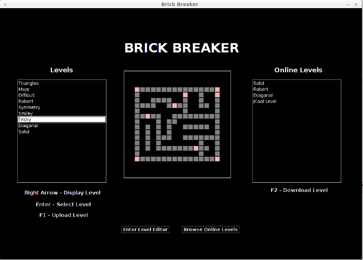
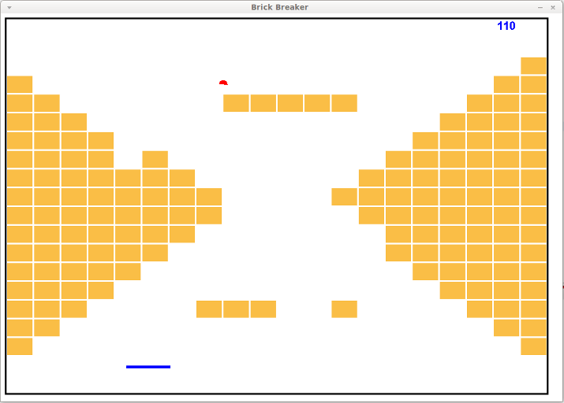
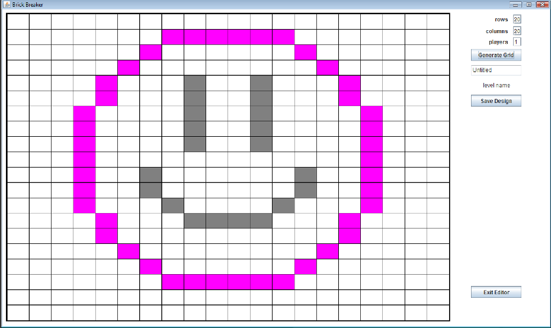
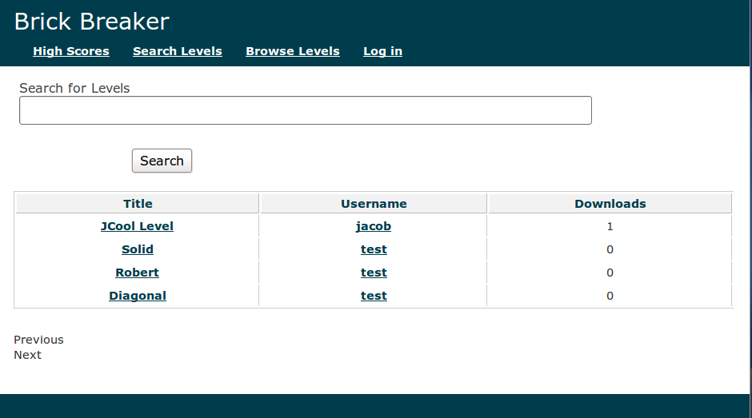

Brick Breaker: A classic game with a modern twist!
Features
Brick Breaker allows you to not only play the classic Breakout game, but you can also design and share custom levels and post high scores to the community site.
To browse levels, click on the name of the level in the left box. The right arrow will display a preview of the level, and the enter key will begin gameplay.
To refresh the list of online levels, click "Browse Online Levels," and make your own level, click on "Enter Level Editor."

Gameplay
The left and the right arrow keys control your paddle. For a two-player game, the top paddle is controlled using the "A" and "S" keys.
After you complete (or fail!) a level, your score will automatically be posted to the community site. If you don't want your score to be posted, simply
click "Skip Login" in the login box that appears at the beginning of the game.

Level Editing
First, enter in the desired size of your level and click "Generate Grid." Now, you can add regular bricks by left-clicking on the grid and permanent bricks by
right-clicking. To remove a brick, simply click it again. You can also click and drag your mouse to place bricks very accurately.
After clicking "Save Design," your level will be visible in the main menu. You can now upload your new level to the website by clicking it and pressing F2!

The Community Website
Check out the community website here! You can register for a new account, view high scores, and search levels. To download a level, click on its
name, and then "Download" on the next page. Save this file to the "levels" folder of your Brick Breaker installation, and it will be visible in the level selection screen!
